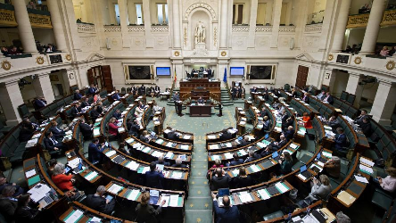

Notre système électoral, qu'en penser ?
Pourquoi devrions-nous amender notre modèle
de représentation politique ?
à l'ombre des lois et avec les couleurs de la justice."
Montesquieu

Ces quelques pages résultent de discussions continues. Devenu un travail collaboratif, ce
document évoluera au fil du temps. Il nous offre l'opportunité de comprendre en profondeur
le fonctionnement de notre système électoral.
Une compréhension approfondie de ce dernier s'avère essentielle si nous souhaitons formuler
des propositions susceptibles d'améliorer la représentation de chacun. En identifiant les
lacunes ou les défauts mis en lumière, nous pourrons solliciter du législateur les
ajustements nécessaires pour corriger notre modèle de représentation, établissant ainsi un
lien de confiance entre les citoyens ordinaires et leurs représentants élus.
Les idées présentées dans les pages suivantes ne sont en aucun cas figées dans le temps.
Elles se concentrent principalement sur le niveau communal, mais pourraient également se
révéler utiles à d'autres échelons du pouvoir. Poursuivons donc nos échanges d'idées, dans
le but de créer de nouvelles règles qui favoriseront le renouveau démocratique tant
espéré.
Nous vous remercions de prendre le temps de lire ces pages avec du recul et d'y réagir avec
la modération nécessaire au maintien de notre paix intérieure.
Qui suis-je ?
Dernière mise à jour : 19-03-2025.
Nombre de visiteurs distincts :